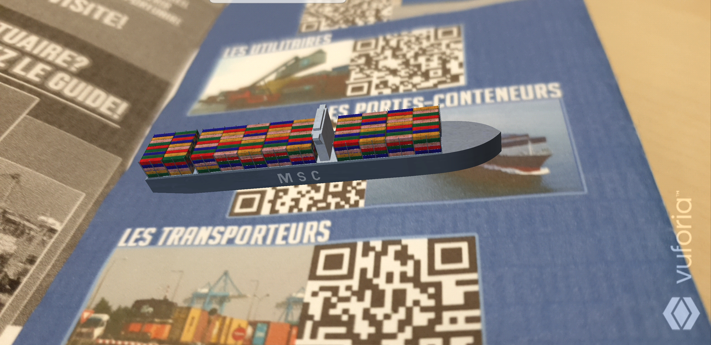
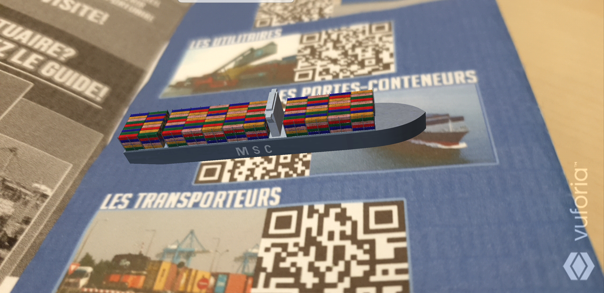
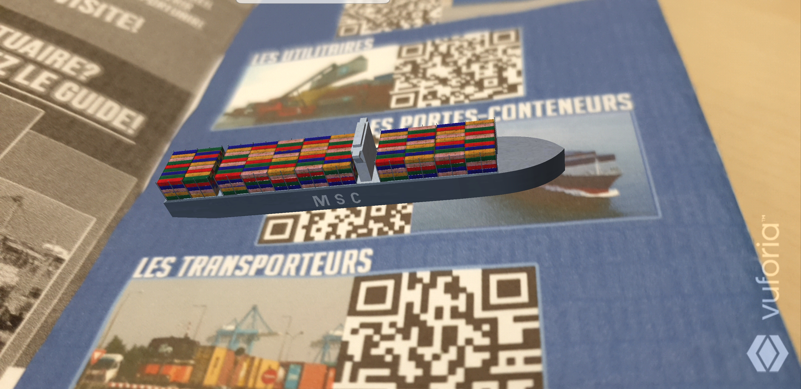
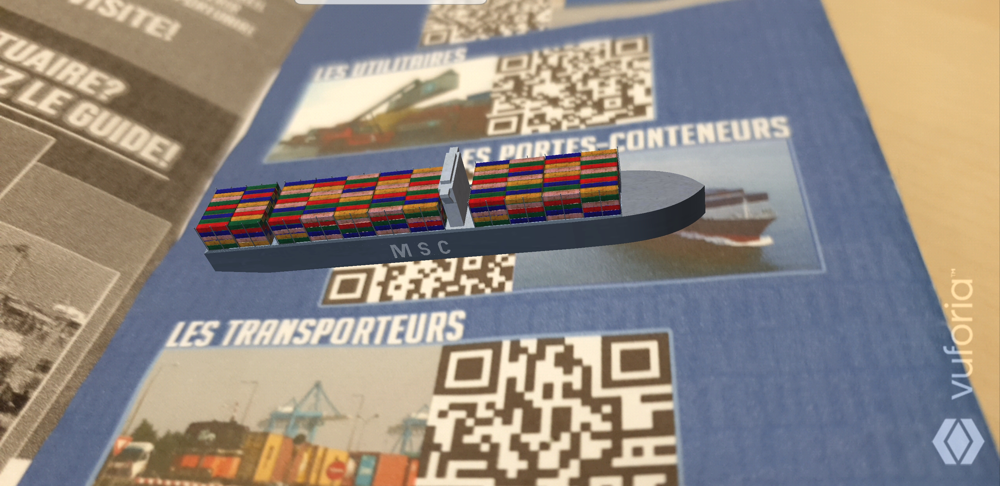

Bienvenue sur le site de l’application HAVREALITY, la première visite du port du Havre en réalité augmentée !
N'oubliez pas de télécharger l'application Havreality avant de commencer la visite
 


 
